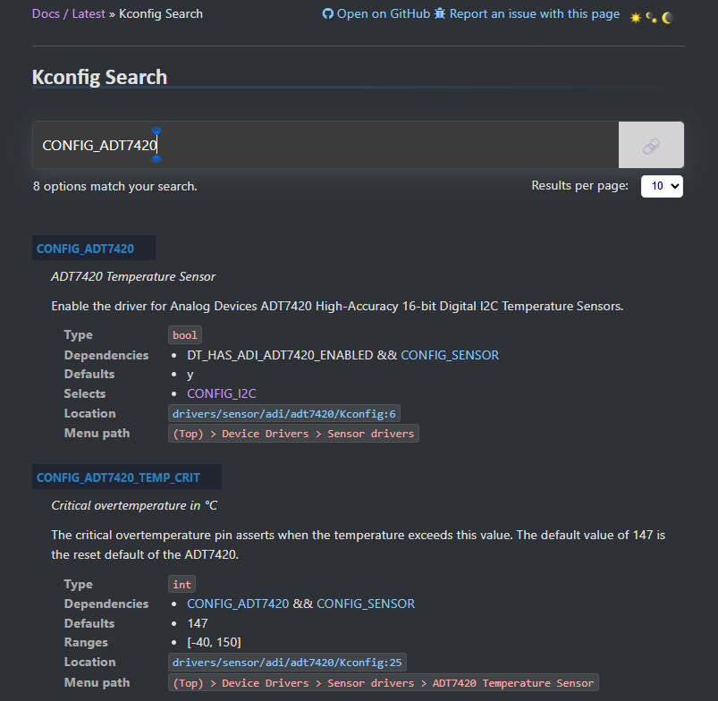

Introduction to Kconfig
Kconfig is a method of configuring an application outside of source code at build time – very similar to GNU Make and Makefiles. It is borrowed from Linux and should be similar or identical to the ways in which Linux handles this process. The goal is to be able to modify the Zephyr kernel and subsystems built into an application without having to modify much (or any) source code.
defconfig files
Individual boards have .defconfig files which can enable individual features by default. Here’s an example from the max32650fthr_defconfig file in the Zephyr tree:
# Copyright (c) 2023-2024 Analog Devices, Inc.
# SPDX-License-Identifier: Apache-2.0
# Enable GPIO driver
CONFIG_GPIO=y
# Enable Console with a UART backend
CONFIG_CONSOLE=y
CONFIG_UART_CONSOLE=y
# Enable UART and set to Asynchronous
CONFIG_SERIAL=y
CONFIG_UART_INTERRUPT_DRIVEN=y
In the above sample we can see various configuration features enabled by default for the MAX32655FTHR for a generic Zephyr application. Some of these include the Zephyr GPIO API, UART driver, and the Console subsystem with a UART Backend. Because they are in the defconfig file, these will be enabled by default for any Zephyr application building for this board. For other boards like the AD-SWIOT1L Ethernet platform, these defconfigs (“default configs”) may include enabling the MPU or Trustzone-M support for the ARM Cortex-M SoC.
Initial configuration for a given project is applied as follows (from the Zephyr project):
A
BOARD-specific configuration file stored inboards/<architecture>/<BOARD>/<BOARD>_defconfigAny CMake cache entries prefix with
CONFIG_The application configuration, contained in a prj.conf file local to the project
prj.conf
A prj.conf file is a Kconfig file that is local to the project files. It can be used to enable features or override configuration done elsewhere in the Kconfig. For example, anything you need that is not enabled in the defconfig for your board can be enabled here. You can also over-ride the defconfig parameters in this file. Here is an example prj.conf for a substantial project with the apard32690_max32690_m4 board target:
# Copyright (c) 2021 Nordic Semiconductor ASA
# SPDX-License-Identifier: Apache-2.0
#
# This file contains selected Kconfig options for the application.
# Enable Logging
CONFIG_LOG=y
CONFIG_LOG_BACKEND_UART=y
CONFIG_APP_LOG_LEVEL_INF=y
CONFIG_LOG_DEFAULT_LEVEL=1
CONFIG_LOG_MAX_LEVEL=4
# Print boot banner
CONFIG_BOOT_BANNER=y
# I2C + SPI for sensors
CONFIG_SPI=y
CONFIG_I2C=y
# Sensor subsystem
CONFIG_SENSOR=y
CONFIG_SENSOR_INFO=y
CONFIG_SENSOR_LOG_LEVEL_WRN=y
# Enable the command-line shell and various subsystem shells
CONFIG_SHELL=y
CONFIG_I2C_SHELL=y
CONFIG_SPI_SHELL=y
CONFIG_SENSOR_SHELL=y
# Enable ADT7420 I2C Temp Sensor
CONFIG_ADT7420
# Thread stack sizes
CONFIG_MAIN_STACK_SIZE=4096
CONFIG_SHELL_STACK_SIZE=4096
Kconfig Search Index
One difficult part of using Zephyr can be navigating the Kconfig dependencies – many Kconfigs are not actually designed to be set directly because they depend on other Kconfigs already being set. A good place to start looking through Kconfig dependencies is the Kconfig Search Index in the Zephyr documentation: Kconfig Search — Zephyr Project Documentation.
We can see in the above image that we get some helpful info right off the bat from searching this index, such as the Menu path in the menuconfig interface, and the location of the place where this Kconfig field is defined.
Kconfig / Devicetree Relationship
In the above image, notice how the CONFIG_ADT7420 value depends on DT_HAS_ADI_ADT7420_ENABLED and CONFIG_SENSOR. This means that this value actually requires an “adt7420” compatible node in your Devicetree that has its “status” property set to “okay”. It also requires CONFIG_SENSOR to be enabled in your project.
“Selects”
The ADT7420 Kconfig “Selects” CONFIG_I2C, meaning it forces this Kconfig to “Y”, enabling it.
Next Steps
Try creating a Zephyr workspace, and building for a particular target board. Now search the menuconfig interface and try enabling various subsystems to enable connected sensors or add individual shell commands. Be careful not to overflow your allotted stack space for your threads! You can easily get into a situation with Kconfigs where you enable a subsystem that overflows a thread’s stack space, which will crash your application. It may be useful in prototyping to set stack sizes larger than needed, or investigate some Kconfigs for the “Stack Sentinel” Zephyr subsystem for debugging purposes.